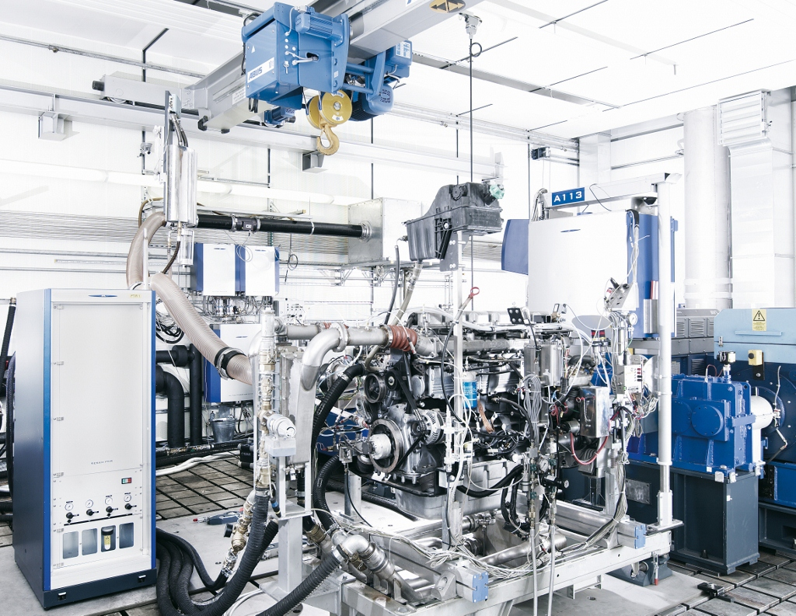
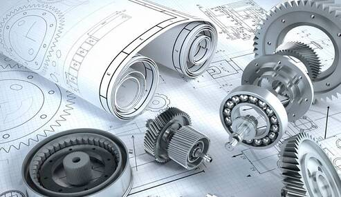
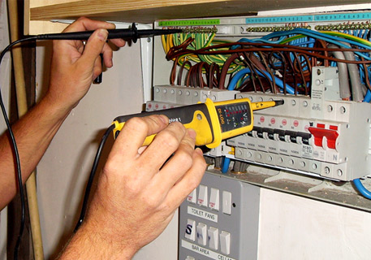
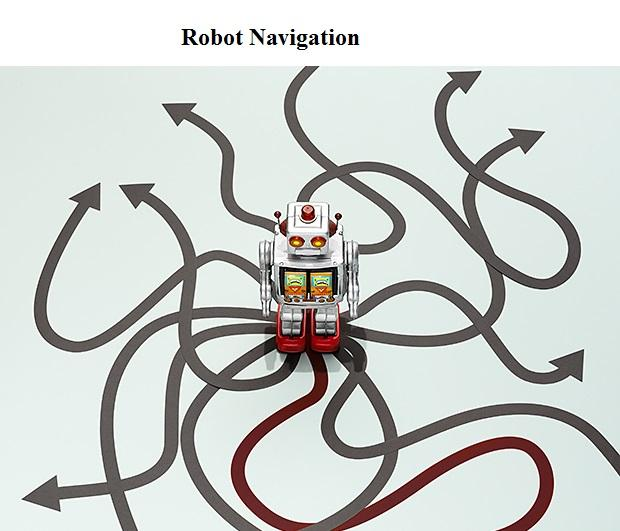
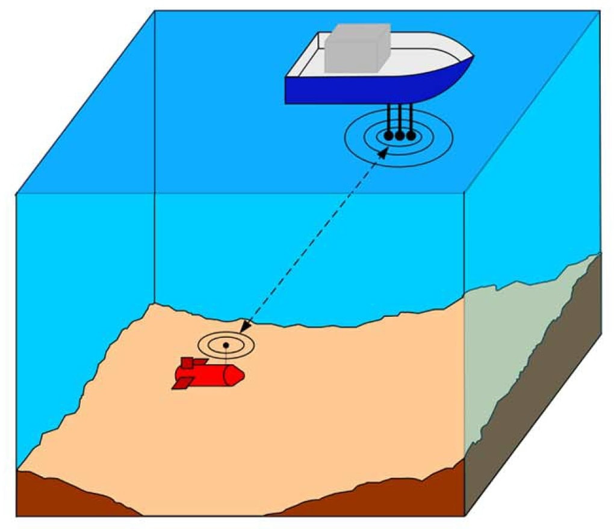

 <!-- Container (Subdivisions Section) -->
 <section id = "Subdivision">
    <div id="Subdivisions" class="container-fluid bg-blue0">
      
        <div class="col-sm-0">
          <h2>Subdivisions</h2>
          
        </div>
            
          
            <ul class="nav nav-tabs">
              <li class="active"><a data-toggle="tab" href="#tab-1">Mechanical</a></li>
              <li><a data-toggle="tab" href="#tab-2">Electrical</a></li>
              <li><a data-toggle="tab" href="#tab-3">Software</a></li>
              
            </ul>
          
            <div class="tab-content">
              
    
          <div  class="tab-content">
              <div id="tab-1" class="tab-pane fade in active">
                  <div class="my_text" class="row">
                      <div >
                        <style>
                          .my_text
                          {
                              font-family:    Arial, Helvetica, sans-serif;
                              font-size:      15px;
                              font-weight:    bold;
                              color: rgb(17, 16, 16);
                          }
                      </style>
                                                          
                          <p> 
                            The Mechanical Subdivision works actively to bring in innovations and develop practical designs for the vehicle. The main interests of the subdivision include planning, designing, and testing different parts, fabricating and waterproofing the entire vehicle which can be disassembled by a few screw sets within minutes.
                          </p>
                          <h4 style="padding-top:20px ;"><b>Designing, Testing and Manufacturing</b></h4>
                          <p class="fst-italic"> 
                            Solidworks is the main designing tool that helps to bring innovation from minds to virtual environments. Changes in the design are also crucial to bring in maximum practicality and efficiency of the vehicle. The testing team is responsible for evaluating the performance of the robotic systems in different marine environments. They conduct various tests, including static and dynamic tests, to determine the robots' capabilities and limitations. The testing team also conducts sea trials to assess the robots' performance in real-world conditions. It is the final step that brings design to reality. It involves building robotic systems based on the designs and specifications. Various manufacturing processes, including machining, welding, and assembly, to produce the robots' mechanical and electrical components. It is also important to keep in mind that the robots meet the required quality standards and undergo rigorous testing before they are deployed for use.
    
                          </p>
                       </div>
                      <div style="padding-left:100px ;" class="col-lg-6 order-2 order-lg-1 mt-3 mt-lg-0" data-aos="fade-up" data-aos-delay="100">
                        
                      </div>
                </div>
    
                  <div class="row">
                      
                          
                      </div>
                      <div class="my_text" class="col-md-7 pt-4 aos-init aos-animate" data-aos="fade-left" data-aos-delay="100">
                          <h4><b>Research and Development</b></h4>
                          <p class="fst-italic"> 
                            The research is the very first step of exploring and involves studying various elements which include structural components like rods, beams, chain mechanisms, thruster designs, conveyor belts, torpedoes, etc. And finalizing the materials, to begin with the design process.
                                         
                          </p>
                      </div>
                  </div>
          </div>
        <div id="tab-2" class="tab-pane fade">
            <div class="my_text" class="row">
                <p>
                  The electrical team in marin robotics team is responsible for designing, developing, and maintaining the electrical systems and components of the robot. This team typically consists of electrical engineers, electronics specialists, and technicians with expertise in circuit design, power systems, and control systems. The electrical team plays a critical role in enabling the robot's electrical systems to function reliably and efficiently. Their work involves designing and integrating electrical components, ensuring proper power management, implementing control systems, and ensuring compliance with safety standards. Collaboration with other teams, such as mechanical and software teams, is essential to ensure seamless integration of electrical systems into the overall robot design.
                </p>
                <div style="padding-top:20px ;"  class="col-lg-6 order-2 order-lg-1 mt-3 mt-lg-0">
                    <h4><b>Designing and Manufacturing</b></h4>
                    <p class="fst-italic"> 
                      The electrical team works closely with other team members, such as mechanical and software engineers, to understand the robot's requirements and translate them into electrical specifications. They participate in system design discussions to ensure that the electrical architecture aligns with the overall robot design and functionality. The team designs and implements the power distribution system for the robot. This includes determining the power requirements of various components, selecting appropriate power sources (such as batteries or power supplies), designing wiring and connectors, and ensuring efficient power management and safety.
                    </p>
                </div>
                <div class="col-lg-6 order-2 order-lg-1 mt-3 mt-lg-0" data-aos="fade-up" data-aos-delay="100">
                    
                </div>
            </div>
            <div class="row">
                <div style="padding-top:50px ;" class="col-md-5 aos-init aos-animate" data-aos="fade-right"
                    data-aos-delay="100">
                    
                </div>
                <div class="my_text" style="margin-top:60px ;" class="col-md-7 pt-4 aos-init aos-animate" data-aos="fade-left" data-aos-delay="100">
                    <h4 style="padding-left:50px;"><b>Task and Testing</b></h4>
                    <p style="padding-left:50px;" class="fst-italic"> 
                      The electrical team provides ongoing maintenance and support for the electrical systems throughout the robot's lifecycle. They address electrical-related issues, perform diagnostics, and conduct repairs or replacements as needed. Control Systems: The electrical team collaborates with the software team to implement control systems and algorithms that govern the robot's electrical and mechanical components. This includes designing and implementing feedback control loops, motor controllers, and signal processing algorithms to enable precise and coordinated movement.
                    </p>
                </div>
            </div>
          </div>
              <div class="tab-pane" id="tab-3">
                  <div class="my_text" class="row">
                    <div style="margin-bottom:50px ;" class="col-md-5 aos-init aos-animate" data-aos="fade-right"
                    data-aos-delay="100">
                    
                </div>
                      
                      <div style="margin-bottom:50px;" class="col-md-7 pt-4 aos-init aos-animate" data-aos="fade-left" data-aos-delay="100">
                        
                          <p class="fst-italic" class="text-left"> 
                                  A software team within a robotics team is responsible for designing, 
                                  developing, and maintaining the software systems that enable the robot 
                                  to perform its tasks and interact with its environment. The team 
                                  typically consists of software engineers, software developers, and 
                                  other technical specialists with expertise in programming, algorithms, 
                                  and software architecture. The team develops the necessary software 
                                  components, modules, and algorithms required for the robot's operation. 
                                  This involves writing code, implementing algorithms for perception,
                                  control, and decision-making, and integrating software with
                                  other subsystems, such as sensors and actuators.
                          </p>
                          
                      </div>
                      <div style="padding-top:20px ;" class="col-lg-6 order-2 order-lg-1 mt-3 mt-lg-0">
                          <h4><b> Navigation</b></h4>
                          <p class="fst-italic" class="text-left"> 
                            The software team designs and implements control systems that govern   
                             the robot's movements and behaviors. This may involve developing       
                              algorithms for motion planning, trajectory generation, feedback     
                              control, and coordination of multiple robot components.
                              
                          </p>
                          
                      </div>
                      
                      <div class="row">
                      <div style="margin-bottom:50px ;" class="col-md-5 aos-init aos-animate" data-aos="fade-right"
                          data-aos-delay="100">
                          
                      </div>
                      <div class="col-md-7 pt-4 aos-init aos-animate" data-aos="fade-left" data-aos-delay="100">
                          <h4><b>Localization And Perception</b></h4>
                          <p align="right" class="fst-italic"> 
                            Localization involves determining the robot's position and    orientation 
                            in its environment. This information is essential for the robot to 
                            navigate, interact with objects, and make informed decisions. 
                            Software engineers in robotics develop algorithms and techniques 
                            to achieve accurate localization. SLAM combines data from various 
                            sensors like cameras, LIDAR, and odometry to create a representation 
                            of the environment and localize the robot within it.  Perception 
                            involves interpreting and understanding the environment using 
                            sensor data. Perception algorithms enable the robot to recognize 
                            objects, detect obstacles, understand scenes, and extract relevant 
                            information for decision-making.
                          </p>
                          
                      </div>
                      <div class="col-lg-6 order-2 order-lg-1 mt-3 mt-lg-0">
                          <h4><b>Sensors</b></h4>
                          <p class="fst-italic">
                            The team focuses on developing software for the perception and sensing capabilities of the robot. This includes processing sensor data (e.g., from cameras, LIDAR, or other sensors) to extract relevant information about the robot's environment, such as object detection, localization, and mapping. - Sensor Fusion: Sensor fusion combines data from multiple sensors, such as cameras, LIDAR, and inertial sensors, to improve localization accuracy. Software engineers integrate sensor data using techniques like Kalman filters, particle filters, or graph-based optimization algorithms.
                          </p>
                      </div>
                      <div style="margin-bottom:50px ;" class="col-lg-6 order-1 order-lg-2 text-center">
                        
                    </div>
                  </div>
                  <div class="row">
                      <div style="margin-bottom:50px ;" class="col-md-5 aos-init aos-animate" data-aos="fade-right"
                          data-aos-delay="100">
                          
                      </div>
                      <div style="margin-top:50px;"class="col-md-7 pt-4 aos-init aos-animate" data-aos="fade-left" data-aos-delay="100">
                          <h4><b>Testing and Debugging</b></h4>
                          <p class="fst-italic">
                            The team conducts thorough testing and debugging of the software components to ensure their reliability, robustness, and performance. This involves running simulations, performing unit tests, integration tests, and conducting field tests to validate the software's functionality and identify any bugs or issues.
                          </p>
                      </div>
                  </div>
              </div>
    
              
          </div>
    
      </div>
      </div>
      </section>